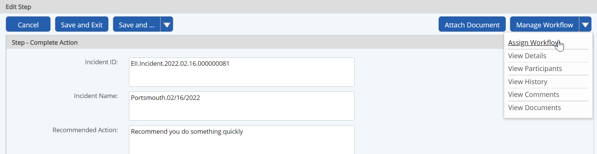
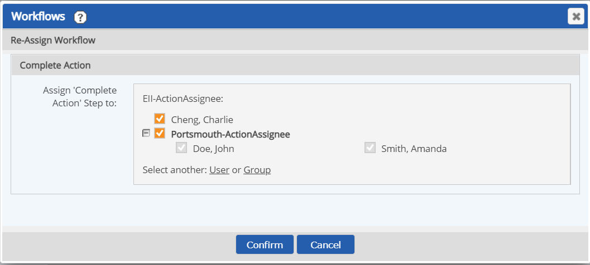
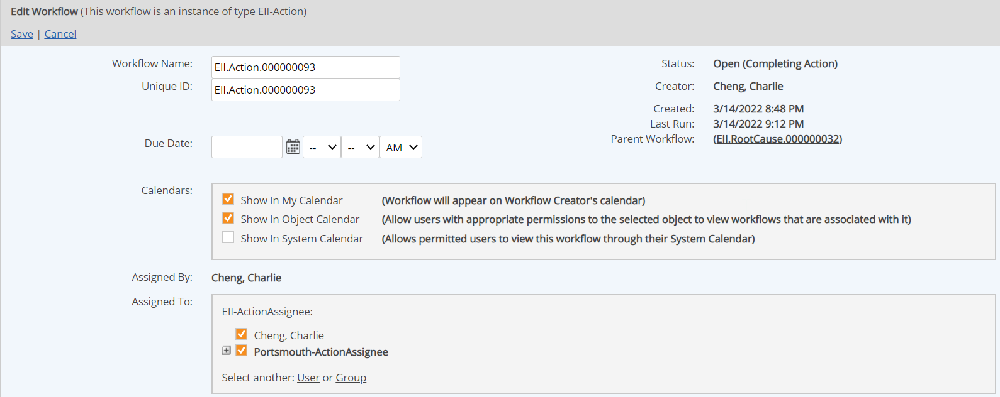

To change the current workflow assignee, you must have the Assign permission for the workflow, granted through any workflow role you are a member of, or have Manage Workflows right. If you are assigned to the current step, or have edit permission for the step, you can reassign the step from the step completion form. Alternately, you can change the assignee of the current step from the Workflow Overview.
To change the workflow assignee from the current step form:
Open the step completion form from your assignments, or from Workflow Overview if you are not the current assignee.
The step form will open in either view or edit mode, depending on whether you are the actual assignee. You can reassign the workflow from either mode.
Select Assign Workflow from the Manage Workflows button.

Select the assignee from the default participants shown in the dialog, or select the User or Group link (if available) to select a different user from the system. Click Confirm.

The new assignee is saved. You may click Cancel, Save and Exit, or Back to exit, or simply navigate away.
To change the current assignee from the Workflow Overview:
Open the Workflow Overview.
From the Workflows panel on a dashboard, select the Workflow Name link.
From a workflow step form, click the Workflow Overview link at the top of the page (opens in a new window).
From Workflows Manager (Tasks and Workflows page), right click the workflow and choose View.
Select the Edit link at the top of the page.
The Assigned To section on the page shows the current assignee. Select another assignee from the default participants listed.

If the default assignee is a group, you can click the plus sign to expand the group and select one or more group members. The User or Group links may be available for selecting assignees from other system users, if you have the permission.